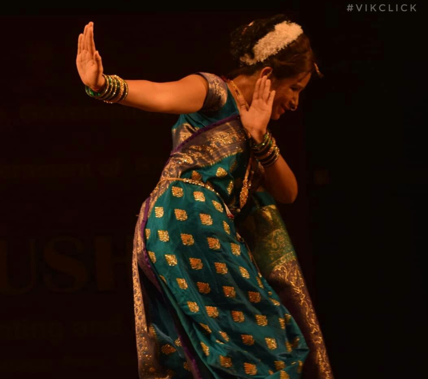
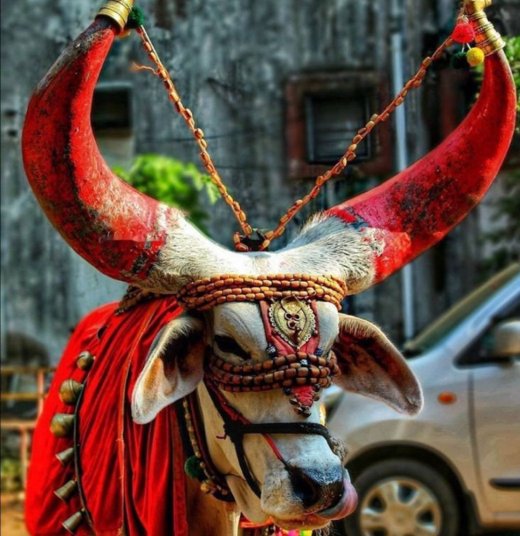
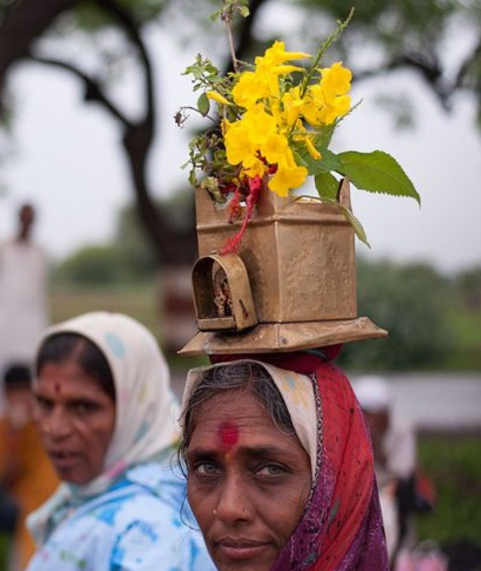
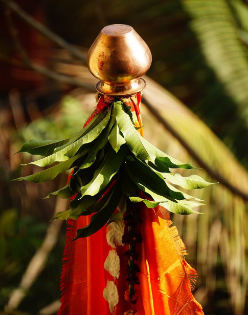

Pride, Power & Tradition
Maharashtra is a land of brave history, rich culture, and modern spirit. From forts of Shivaji Maharaj to vibrant festivals and folk arts, Maharashtra beautifully blends tradition with progress.
• Capital: Mumbai
• Financial capital of India
• Home to Bollywood Film Industry
• Famous for forts of Chhatrapati Shivaji Maharaj
• Major Language: Marathi




Maharashtra offers many attractions including Mumbai, Pune, Mahabaleshwar, Lonavala, Ajanta Caves, Ellora Caves, Shirdi, Gateway of India, and Raigad Fort. The state combines historical, cultural, and modern attractions.
Maharashtra’s folk and traditions reflect the spirit, bravery, and simplicity of its people. Folk arts like Lavani, Powada, and Tamasha express stories of valor, devotion, and everyday life through energetic dance and music. Festivals such as Ganesh Chaturthi, Gudi Padwa, and Wari are celebrated with deep faith and community bonding. Traditional attire, local crafts, and devotional songs together keep Maharashtra’s cultural heritage alive and vibrant across generations.